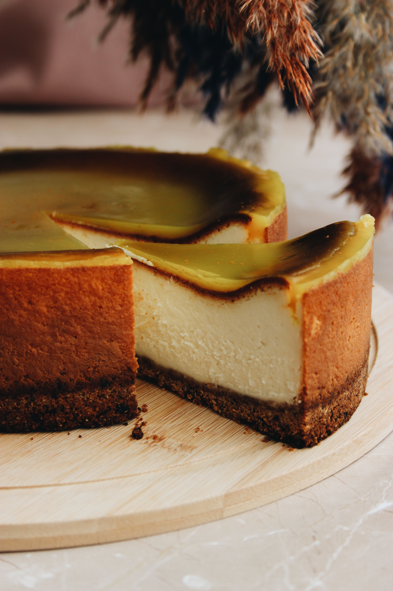

Home
"Flan pâtissier"

Description:
A "Flan pâtissier" is an equivalent to custard tart in England or to pastel de nata in Portugal, but in France. It is quite similar, but not the same, so I can't call it by the English name.
Ingredients
- A shortcrust pastry
- 3 eggs
- 150g of sugar
- 75g of cornflour
- grains of 1 vanilla pod
- 150g of liquid cream
- 600g of milk
Steps
- Put the eggs, the sugar, the cornflour, the vanilla grains and the cream in a mixing bowl and mix until you have a consistent liquid.
- Pour it in a saucepan and add the milk. Slowly mix with mid fire (adapt the heat if needed).
- Let it cool down and add a clingfilm direclty on it to prevent the apparition of a crust.
- Preheat your oven at 180° C and put the shortcrust pastry in a baking pan.
- Add some baking paper on it and some baking balls. Put it in the oven for 15 minutes.
- Remove the baking paper and baking balls. Remove the clingfilm from the cream.
- Pour the liquid on the shortcrust pastry and put it in the oven for 30 minutes, still at 180° C.
- By the end, the flan should form a dome. At the end of the timer, take the cake out and let it cool down for at least 3 hours.
- Voilà! Enjoy!